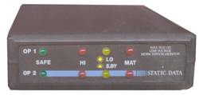
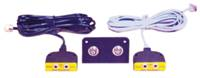
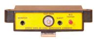

| WT-1035 Work Station Monitor | |||
|  |
Flexible design can be used with either dual wire or standard single wire wrist straps By simply switching adapters the WT-1035 can be used with virtually any style wrist strap.
|
||
| WT-1060 Adapter For Basic Connection With Dual Wire Wrist Straps | |||
|  |
Remote jacks enable wrist straps to be monitored in "resistance" mode. Monaural jack accepts dual wire wrist straps from all major suppliers including STATIC TECH's WB-6000 and WB-7000 series. |
||
| WT-1050 Impedance Converter For Single Wire Wrist Straps | |||
|  |
These grounding blocks convert the monitor's signal to impedance mode, enabling the unit to work with standard single wire wrist straps with banana plugs. |
||
| DUAL WIRE WRIST STRAPS FOR RESISTANCE MONITORS | ||||||||||||||
|
Resistance monitors are becoming increasingly popular among electronic manufacturers to ensure wrist straps are working. Dual wire wrist straps are needed with resistance monitors to carry a signal from the monitor along the wrist strap and back to the monitor. We offer two wrist strap designs for use with resistance monitors. These wrist straps work with all resistance monitors including our WT-1035 low voltage unit. |
||||||||||||||
|
||||||||||||||
|
||||||||||||||